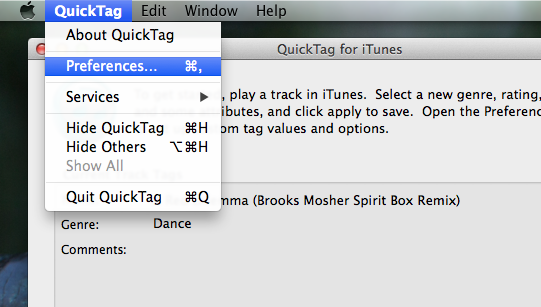

The Preferences Window
When you select Preferences from the QuickTag menu, you'll be presented with the Preferences Window.


The 5 tabs are
- Genres: Specify the genre list.
- Categories: Specify the category list.
- Attributes: Specify the attribute list.
- Tagging: Configure QuickTag tagging.
- Options: Configure QuickTag options.
The "Apply" button will apply the changes. Settings are automatically saved in user preferences.
See also
Genre Preferences
Category Preferences
Attribute Preferences
Tagging Preferences
Option Preferences